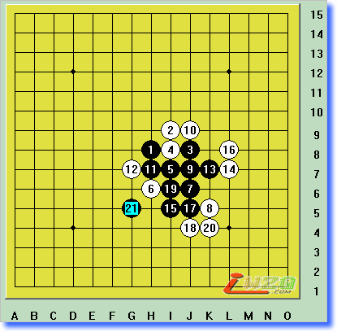

土土讲开局-恒星篇(I3)
#1 土土讲开局-恒星篇(I3) 作者：有志青年 发表时间：2008-1-11 12:05:38
再次感谢网友smyjo发来的《土讲开局银月、恒星整理版》，并将网页中文本棋谱全替换为图片形式。另附lib互动棋谱。
如果您有好的资料愿意共享可以将它发到我的邮箱：ntcyz@126.com
#2 Re:土土讲开局-恒星篇(I3) 作者：有志青年 发表时间：2008-1-11 12:15:37
图示为斜指恒星开局（I3），白棋可以考虑的防点有A～F，由于棋形具有对称性，有些防点会有两个（例如下图B、E），二者只在盘端会有两路的微小差别，本栏目将不细致研究这一变化，特殊需要时会特别指出。
恒星图A1复杂，白第4手走总图A点，白6、8最强！黑连攻抢占要点，白18强，黑连续做VCF杀棋39手取胜。白12反挡则黑G8双杀，白10和白16同样不可反挡(见补图)。
恒星图A1
图A1白6反挡，黑11跳三好，白12最强，以下黑连攻，至黑23双杀止。请仔细体味黑棋的攻击线路，也包括图A1。再指出一点，白22走a，黑在b点挡，以下走22、b右一点可胜。
恒星图A1补a
图A1中白16反挡，黑棋简单以17、19、21短平快地双杀止。以后这种三部曲的图可能就只是说说而已，不“滥芋充数”了，:)。
恒星图A1补b

图A1白第18手变招，同样黑可连续进攻做杀，至黑第39手走a双杀止。黑35不可省，直接走黑37白可在35冲用长连解困。土土推荐谱1黑1在7点跳做杀的简明下法。
恒星图A2
同样白第18手走下图◎点防也无济于事，黑可用下图黑7的巧妙双杀解决战斗。
恒星图A2补a
白棋第8手在上面挡，黑9走成梅花型有力！白18强防，黑19好手，黑25更是决定乾坤的一手，以下白无奈。
恒星图A3
前图白第18手变换挡点，也较强，黑19是好型！经23、25、27后VCF胜定。
恒星图A4
前几图白第6手走法失败，现白改为如下图挡，黑7、9好型，黑11走a也可，就将转换成图B系列图了。白14最强，谱2黑25是好手，黑胜定。谱1白8走12，则黑走B成必胜型。
恒星图A5
图A5谱白18如下图反向挡，则黑走19，21(!)妙手定胜负，下面黑a双杀和b、c、d连续VCF杀必得其一;白20若改在下方挡，则黑e双杀止。
恒星图A5补a
关于图A5补a里的E点双杀，再用下图解释一下，如白22防杀，则黑走23，25(!)，不可误走四三杀，白有反杀逼四四禁手！若白22走A点防，此图走法也可，此外也可走B、C双杀。
恒星图A5补b
#3 Re:土土讲开局-恒星篇(I3) 作者：有志青年 发表时间：2008-1-11 12:19:12
白第10手变化，黑11有力，白12最强，黑13好型，以下黑连攻胜，黑25做杀，黑27双杀是好手，白24走c黑简单在右下取胜。白10走a，则黑走b可胜。
恒星图A6
对于图A5、图A6中的白第6手的下法，以下黑7的手段也是可行的，但这种露骨的进攻是土土所不喜好的。请仔细体会黑13和黑17的作用。
恒星图A7
白第6手再改防点，但黑7，9(!)后成必胜型，黑7要点，白已无更强的防守手段。黑13走a点也是好手，若改走b期待白走13，然后黑a是一厢情愿的，白可走c防，黑不如此图有力。
恒星图A8
白第6手假如按下图走，黑7，9就走成有名的燕阵了，下面基本可以走成如下形式，无论白以后如何防守，黑都可把握住棋的命脉。燕阵必胜已有定论。
恒星图A9
#4 Re:土土讲开局-恒星篇(I3) 作者：有志青年 发表时间：2008-1-11 12:25:40
白第4手防在总图B点，黑5仍是要点，7(!)，9(!)，11(!)，白14强防，但33手后黑VCF胜。白22如走A，黑B先冲再走C胜，白26若反挡，黑有VCF。
恒星图B1
图B1第14手白按下图挡法并不强，黑19(!)、21(!)双杀胜定。在我以后的图中以(!)标定的手数大家一定要着重领会。
恒星图B1补a
图B1第12手变招，黑13(!)、15(!)、17(!)，至右谱黑走d点活三后VCF胜。白14若走a或b活三，黑c(!)是好手。白12若直接在J6防，黑走M8也可胜。
恒星图B2
第12手白走中间穿又怎么样呢？这次黑走13(!)，至黑25后在上下都有VCF杀棋，白动弹不得。白20挡下面的变化在补图里说明。
恒星图B3 
图B3谱1白8在下方挡，黑21(!)做杀好，白22无奈，黑23(!)又是值得回味的好手，白无法防住黑的多重打击。
恒星图B3补a
前几图第10手白改为外止，黑11(!)、13(!)，15，17(!)成双杀，白16若在上方阻挡黑棋活三，则黑走A一子双杀。当然白12有多种防法，附图将给出另一例，但黑棋总能找到制胜之招。
恒星图B4
图B4白12改为直接阻挡黑棋一个颇有威慑力的眠三，则黑13活三，黑15(!)做杀，白16最强，但黑17(!)后黑棋攻势太盛，白棋已无招架之功。白12的其他走点皆不如图B4两图为强。
恒星图B4补a
看来图B1－B4中第6手白的防点不成功，换成G9怎么样呢？黑7展开，黑9做棋，白10，12最强，但黑13(!)妙手，以下就容易处理了。黑13走A是俗手，白走13防守黑难胜。
恒星图B5 
对于前图防法，黑7也可按下图进攻，至黑11(!)占据主动。但土土不推荐这种走法，因为相比上图，白棋反攻的意味更浓，一般棋友不易掌握黑棋的攻防节奏。此图与云月走法同型.
恒星图B6
#5 Re:土土讲开局-恒星篇(I3) 作者：有志青年 发表时间：2008-1-11 12:30:46
第4手白走总图C点防较弱，黑5走I7成浦月必胜型也可，白6反挡则黑J9；黑15的走法很常用，白16若走a，则黑走23-b-c-d-16胜；请注意黑棋的行棋步调。
恒星图C1
第4手白走总图D点，黑5做棋，白6(!)强，白10最强，黑13是解禁手的好棋，白14若走a，则黑b；至黑29后双杀。其中白棋还有多种防法，请大家自行拆解。
恒星图D1 
白第6手变招，黑用下图7、9梅花阵即可获胜，至黑13后黑成必胜之形。
恒星图D2
白第6手变招，黑用下图7、9梅花阵即可获胜，至黑13后黑成必胜之型。
恒星图D3
第4手白防于总图E点，也是弱防，黑5简明，白6最强，下面就和图A8一样了！当然黑5也可走6成云月必胜局，以后在云月中再详述。
恒星图E1
第4手白于总图F点防，弱，黑可成攻杀之型，以下变化多，但黑棋均能胜之。其实白F点防在职业对局中是强点，白可拔去两打之黑1，Renju World27期有Ando对第5手黑走a的分析
恒星图F1
总算又把《恒星篇》完成了，但对比于前一讲《银月篇》，我感觉还是不够严谨些，毕竟恒星自己用的比较少，体会不深。本栏目的脉络其实是按照日文版《五珠定石》一书，但此书变化图并不详尽，且一般摆至黑棋胜型就不往下介绍了。在这里，土土结合自己的研究对此书进行了补充，不光尽量将每图中的变化拆至VCF杀或双杀，而且还加入了一些其他变化。此书中银月有16图，土土给扩至29图，恒星同样也做了补充说明，只不过在恒星中除了少数几幅书中未提及的变化图外，大都以补充图形式贴出。
恒星图大都比较复杂，大家不用死记硬背那些变化，要从中掌握黑棋行棋的要旨。但恒星图A系列一定要牢牢掌握，因为类似型状在实战中经常出现，白棋同样也暗藏杀机，所以黑棋行棋的次序、节奏很重要。
讲了两讲的斜指开局，下面要讲有名的直指开局－寒星(D1)，说它有名是因为自古以来寒星就成了五子棋入门的必修科目（当然还有那两个“臭名昭著”的花月、浦月），研究很久也似乎比较深入。但在不久前的第6界世界杯A组中，还出现了两盘寒星开局！其中张进宇五段寒星执黑告负确实令人惋惜，看来开局一课连职业棋手也要补补的。
对应的lib棋谱下载：
 Lib棋谱.rar
Lib棋谱.rar